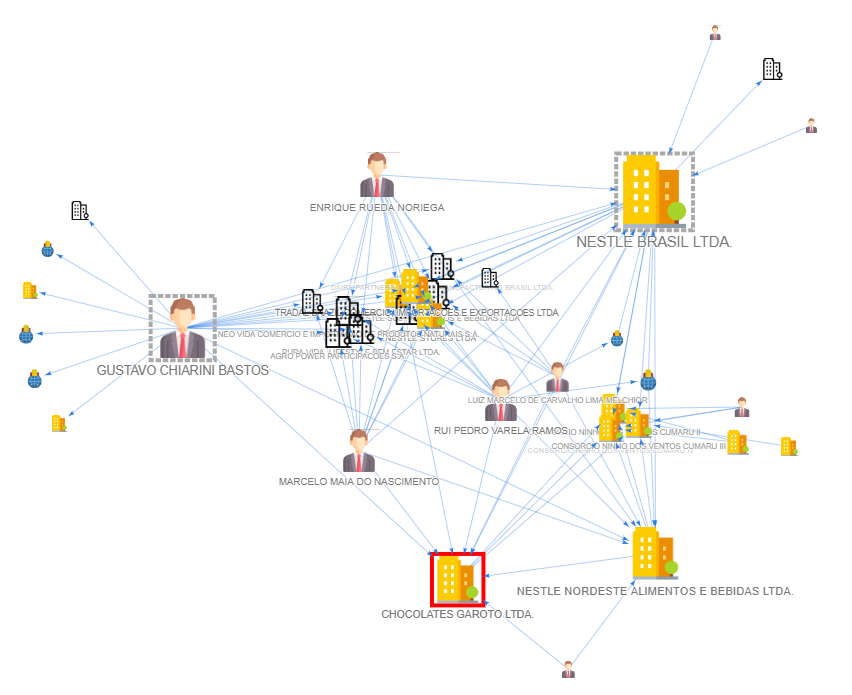

SINARC
Sistema Integrado de Análise de Redes Complexas
Versão 0.1.0

1 - O que é uma rede complexa?

Uma Rede Complexa é um sistema dinâmico formado pelo conjunto de elementos (nós) e das relações existentes entre eles (arestas), cuja complexidade de suas conexões requer para sua compreensão a utilização de ferramentas para modelagem/representação matemática, simplificação e análise computacional da rede. A complexidade de uma rede está relacionada ao grau de aleatoriedade e ao número de suas conexões. Nesse contexto, o SINARC se propõe a realizar uma abordagem das conexões existentes em determinado momento (análise estática), entre pessoas físicas (PF), pessoas jurídicas (PJ), endereços (EN), telefones (TE) e e-mails (EM) cadastrados na base de dados pública de CNPJ da Receita Federal do Brasil (RFB) por meio da modelagem de sistemas complexos, usando a teoria dos grafos (playlist 1, playlist 2).
O SINARC captura um instante (data da disponibilização da base de dados pela RFB) do processo contínuo de evolução de um sistema complexo, dinâmico e real: registros e atualizações diárias de mais de 60 milhões de CNPJ junto à RFB. A expansão controlada do grafo a partir da adição de camadas sucessivas a um ou mais nós iniciais reproduz o comportamento de um sistema complexo.
Características de um sistema complexo (base de dados de CNPJ da RFB):
- Diversidade: Os nós do sistema representam diferentes tipos de entidades (PJ, PF, EN, TE e EM) e de relacionamentos entre eles (sócio, representante, filial etc.);
- Conectividade: O sistema complexo possui uma grande quantidade de nós interconectados por arestas, formando uma rede densa e interligada;
- Escalabilidade: O sistema aumenta em escala, adicionando novos componentes e aumentando as interconexões entre eles, resultando em uma estrutura de conectividade complexa;
- Não linearidade: O crescimento do sistema exibe comportamento não linear e imprevisível;
- Atualização contínua: O sistema está em constante atualização, o que implica que novos nós e arestas são adicionados e os existentes podem ser modificados ou removidos ao longo do tempo;
- Centralidade: Alguns nós podem desempenhar um papel central na rede, atuando como pontos de ligação entre várias entidades no sistema;
- Comunidades: O sistema pode ter agrupamentos de nós que estão mais densamente conectados entre si do que com o restante da rede, formando comunidades ou clusters;
- Dinâmica temporal: As conexões entre os nós podem variar ao longo do tempo, refletindo mudanças nas relações entre as entidades representadas;
- Propriedades emergentes: O sistema complexo exibe propriedades emergentes onde o comportamento global da rede não pode ser previsto apenas olhando para o comportamento individual dos nós. Essas propriedades podem surgir de interações complexas e não lineares entre os elementos da rede;
Cada sistema complexo é único e pode exibir variações nas características com base em sua natureza específica e no contexto em que está inserido.
2 - O que é o SINARC?

O SINARC – Sistema Integrado de Análise de Redes Complexas é um programa experimental de análise de dados de fontes abertas desenvolvido pelo Ministério Público de Contas do Estado do Espírito Santo (MPC-ES) sob os princípios da Ciência Aberta (metodologia aberta, código aberto, dados abertos, acesso aberto, revisão por pares aberta e recursos educacionais abertos), sob Licença MIT (software livre e gratuito), para uso em computadores Windows. O sistema foi criado a partir do inspirador projeto Rede CNPJ, porém utilizando técnicas e ferramentas de programação distintas, o que lhe confere funcionalidades singulares.
Como sistema de inteligência para fontes abertas (Open Source Intelligence - OSINT), o SINARC se propõe a ampliar as perspectivas de análise das conexões existentes entre pessoas físicas, pessoas jurídicas, endereços, telefones e e-mails constantes na base de dados pública de CNPJ da Receita Federal, formada por 60 milhões de empresas, por meio da criação de uma interface gráfica concebida a partir dos princípios da percepção visual extraídos da Psicologia da Gestalt (vídeo), facilitando a identificação visual das estruturas pelo analista, e de um conjunto de ferramentas computacionais que utilizam a Teoria dos Grafos para analisar a rede de conexões sob a perspectiva de um Sistema Complexo e aplicar algoritmos matemáticos para auxiliar na identificação de informações e padrões ocultos relevantes para a produção de conhecimento.
Em síntese, o SINARC:
a) realiza a modelagem da rede complexa formada pela base de dados pública de CNPJ da Receita Federal, utilizando o modelo de banco de dados desenvolvido pelo magnífico projeto Rede CNPJ, disponível gratuitamente na plataforma Github; e
b) gera uma interface gráfica (página web) com recursos para exploração visual da rede por meio de um ambiente interativo que combina princípios da Física (gravitação universal) e da Psicologia (percepção visual segundo a Gestalt e para exploração automática usando algoritmos computacionais que identificam informações ocultas na rede, como nós centrais, caminhos mais curtos entre nós e comunidades de nós, de acordo com a metodologia adotada pelo usuário.
Análise de Dados = bases de dados + ferramenta + metodologia
Assim como o projeto Rede CNPJ, o objetivo do SINARC é demonstrar a possibilidade de criação de ferramentas tecnológicas para exploração de dados abertos e incentivar o desenvolvimento de projetos semelhantes pela sociedade.
Importante registrar que o SINARC foi concebido tendo como inspiração o brilhante trabalho desenvolvido pelo criador do projeto Rede CNPJ, que, com o objetivo de fortalecer o controle social e institucional da Administração Pública, disponibiliza à sociedade para utilização como software livre não apenas o código fonte do projeto, mas também o procedimento de implantação da infraestrutura necessária ao seu funcionamento, sem os quais a "mágica" não seria possível. O SINARC segue a mesma filosofia colaborativa de ampliação e de capacitação do cidadão para que outros projetos semelhantes possam ser desenvolvidos e compartilhados em domínio público.
"O verdadeiro progresso é o que põe a tecnologia ao alcance de todos!" (Henry Ford)
Conquanto o SINARC utilize apenas a modelagem de banco de dados do projeto Rede CNPJ, optou-se por disponibilizar a íntegra do programa junto com o SINARC, permitindo ao cidadão explorar as duas ferramentas.
Conheça o repositório do SINARC no Github.
Vídeo demonstrativo do SINARC:
3 - A quem se destina o SINARC?
O SINARC se destina a todos que exercem o controle social e institucional da Administração Pública, como auditores, jornalistas, comissões de licitação, procuradorias jurídicas, sistemas de controle interno, ministérios públicos, entre outros órgãos e instituições, além do cidadão interessado em obter informações sobre a estrutura empresarial de grupos econômicos, a situação jurídica de licitantes e as relações existentes entre pessoas físicas e jurídicas cadastradas na base de dados pública de CNPJ da Receita Federal.
Como sistema de inteligência para fontes abertas, o SINARC realiza análise exploratória dos dados, fornecendo indícios e insights para investigações mais aprofundadas.
ATENÇÃO: Antes de utilizar as informações obtidas por meio do SINARC para tomada de decisões, valide-as mediante consulta direta aos portais de transparência e às bases de dados primárias atualizadas.
4 - Conceitos básicos

Simbologia: Significado das propriedades visuais dos nós e das arestas (imagens, tamanhos, rótulos, bordas, formas e cores) que representam características das entidades analisadas (PF, PJ, EN, TE e EM) e das relações existentes entre elas. Ver imagens usadas pelo SINARC.
Nó: Figura que representa pessoas físicas, pessoas jurídicas, endereços, telefones e e-mails.
Camada: Conjunto de nós diretamente conectados (adjacentes) ao nó selecionado.
Aresta: Linha no formato de seta unidirecional que representa o tipo e a direção da ligação/relação existente entre dois nós. As arestas atuam como molas de retenção no modelo físico do layout gravitacional. O nó da origem da seta possui, em regra, ascendência hierárquica (maior importância) sobre o nó do destino. No SINARC, endereços (EN), telefones (TE) e e-mails (EM) são sempre localizados como nós de destino nas setas e sempre são exibidos quando o nó localizado na origem da seta faz parte da última camada do grafo solicitada ao banco de dados (EN, TE e EM formam uma camada adicional). Os demais nós, pessoa física (PF) e pessoa jurídica (PJ), podem estar tanto na origem quanto no destino das arestas.
Grafo: Estrutura matemática que representa graficamente um conjunto de elementos (nós) e das relações/ligações existentes entre eles (arestas). Os grafos podem ser classificados como conectados, quando todos os nós estão interligados, e não conectados, quando pelo menos um nó não possui ligação com os demais. Quanto ao tipo de aresta, os grafos são classificados em direcionados/dirigidos, quando as arestas possuem formato de seta, e não direcionados/não dirigidos, quando as arestas não possuem formato de seta ou possuem setas em ambas as extremidades. Os grafos gerados pelo SINARC são sempre direcionados.
Grau: Propriedade do nó que indica o número de nós a ele diretamente conectados (adjacentes). No SINARC, cada nó possui apenas uma ligação com os outros nós. Não há ligações em paralelo entre dois nós.
Distância: Propriedade do nó que indica o número mínimo de arestas consecutivas que o separa de outro nó (caminho mais curto). Quando o grafo é conectado e possui apenas um nó-alvo, todos os demais nós exibem no popup a distância para o nó-alvo (Distância Alvo).
Centralidade: Propriedade matemática do nó que indica a importância da sua posição no grafo, segundo determinado critério. Atualmente o SINARC calcula 5 medidas de centralidade distintas (imagem 1, imagem 2):
- Centralidade de Grau (Degree Centrality)
- Centralidade de Intermediação (Betweenness Centrality)
- Centralidade de Proximidade (Closeness Centrality)
- Centralidade de Autovetor (Eigenvector Centrality)
- Ranking de Página (PageRank)
Nó-alvo: Nó utilizado como parâmetro de consulta à base de dados e identificado no grafo pela borda vermelha (exceto na consulta livre - tecla s - e na consulta individual por seleção de nomes no texto, quando não há destaque do nó-alvo).
Nó selecionado: Nó destacado dos demais por meio de fundo verde translúcido, sobre o qual são aplicadas funções de análise.
Nós centrais: Nós identificados no grafo por meio de bordas tracejadas nas cores cinza ou vermelha (quando se tratar de nó-alvo), calculados mediante aplicação de algoritmos de centralidade (Centralidade de Intermediação - Betweenness Centrality, Centralidade de Proximidade - Closeness Centrality, Centralidade de Autovetor - Eigenvector Centrality e Ranking de Página - PageRank). O nó central identificado por meio do algoritmo de Centralidade de Grau - Degree Centrality é destacado pelo tamanho da sua imagem (maior imagem no grafo) e não pela inserção de borda tracejada.
Rótulo: Texto que identifica nós e arestas. Os rótulos dos nós são proporcionais ao tamanho de cada nó e são exibidos na tela somente quando o seu texto está acima de determinado tamanho (controlado pela função de zoom).
Bandeira vermelha: Imagem que se sobrepõe aos nós PF, PJ e PE para indicar um ou mais dos seguintes fatos relevantes relacionados à PGFN, à CGU e à RFB. Atualmente, apenas os dados da RFB estão disponíveis. Os demais serão implementados gradualmente:
- PGFN - Existência de dívida com a União - Dívida ativa geral (PGFN-SIDA), dívida ativa previdenciária (PGFN-PREV) e dívida ativa de FGTS (PGFN-FGTS) (base de dados).
- CGU - Existência de acordo de leniência (base de dados).
- CGU - Inscrição no CEIS - Cadastro Nacional de Empresas Inidôneas e Suspensas (base de dados).
- CGU - Inscrição no CNEP - Cadastro Nacional de Empresas Punidas (base de dados).
- CGU - Inscrição no CEPIM - Cadastro de Entidades Privadas Sem Fins Lucrativos Impedidas (base de dados).
- CGU - Inscrição no CEAF - Cadastro de Expulsões da Administração Federal (base de dados).
- CGU - PEP - Pessoa Exposta Politicamente (base de dados).
- RFB - Situação cadastral negativa da pessoa jurídica junto à Receita Federal (inapta ou suspensa) (base de dados).
Layout: Desenho geométrico formado pela posição relativa dos nós e das arestas em relação ao plano de fundo. Em redes complexas, layouts cujos nós apresentam posições simétricas entre si são mais fáceis de analisar visualmente (vide princípios da Gestalt para percepção visual). O SINARC utiliza atualmente 4 tipos diferentes de layouts:
- Gravitacional (padrão inicial): Posiciona os nós automaticamente com base no valor de suas massas ou manualmente usando o mouse após congelamento de nós do grafo.
- Hierárquico a partir das folhas: Posiciona os nós em colunas paralelas, iniciando pelo alinhamento à direita de todos os nós localizados nas extremidades do grafo (folhas), os quais possuem apenas arestas chegando (não possuem setas saindo). O grafo é construído sempre com arestas orientadas da esquerda para a direita (tecla k).
- Hierárquico a partir da raízes: Posiciona os nós em colunas paralelas, iniciando pelo alinhamento à esquerda de todos os nós localizados nas origens do grafo (raízes), os quais possuem apenas arestas saindo (não possuem setas chegando). O grafo é construído sempre com arestas orientadas da esquerda para a direita (tecla k).
- Circular: Posiciona os nós em círculo, em ordem decrescente do número de arestas no sentido horário (tecla K).
Área do grafo: Plano bidimensional de fundo sobre o qual nós e arestas são posicionados, semelhante a uma toalha branca aberta sobre uma mesa. Seguindo essa analogia, o grafo seria como um quebra-cabeças cujas peças são montadas sobre a toalha.
Janela de visualização: Área retangular da tela por meio da qual o analista visualiza o grafo e controla a aproximação (zoom in) e o distanciamento (zoom out) da área do grafo, semelhante a uma câmera com foco fixo no centro da mesa.
Retorno sonoro: Sons (beeps) em diferentes frequências e durações (graves e agudos, curtos e longos) emitidos para sinalizar ao analista sobre as etapas do processo de captura de texto e de consulta à base de dados.
5 - Funcionalidades do SINARC
✅ Programa portátil, executável no sistema operacional Windows a partir de qualquer dispositivo de armazenamento (HD externo, pendrive). O SINARC utiliza o navegador padrão.
✅ Consulta individual por nome de pessoa física, razão social, nome fantasia de pessoa jurídica formado por até 10 palavras (PDF, HTML, DOC, TXT, XLSX etc.), mediante seleção e utilização das teclas CTRL + c (exemplo para teste).
✅ Consulta individual pelo número completo do CNPJ (formatos 00.000.000/0000-00 ou 0000000000000) ou pelo radical do CNPJ (formato 00000000) em qualquer texto selecionável (PDF, HTML, DOC, TXT, XLSX etc.) ou digitado mediante utilização da tecla s.
✅ Consulta simultânea por múltiplos números de CNPJ (formatos 00.000.000/0000-00 ou 0000000000000) a partir de qualquer texto selecionado com mais de 10 palavras (PDF, HTML, DOC, TXT, XLSX etc.), utilizando as teclas CTRL + c (exemplo para teste).
✅ Possibilidade de cruzamento de informações entre nós localizados em abas diferentes do navegador (teclas + e -) para verificar se existe conexão entre eles (cruzar exemplos anteriores).
✅ Exibição de popups com informações sobre a rede, sobre cada nó apontado pelo mouse e sobre seus nós adjacentes.
✅ Exibição de popups com informações sobre o acionamento do mouse e do teclado e respectivas funções.
✅ Destaque visual das arestas adjacentes ao nó apontado pelo mouse e aos nós selecionados.
✅ Exibição da rede em 4 tipos diferentes de layouts (teclas k e K). CNPJs para teste: 28.053.619/0001-83, 31.282.494/0001-78:
- Layout gravitacional (padrão inicial) - tecla k;
- Layout hierárquico a partir das folhas, construído a partir do alinhamento dos nós de destino das arestas (folhas da árvore de nós) - tecla k;
- Layout hierárquico a partir das raízes, construído a partir do alinhamento dos nós de origem das arestas (raízes da árvore de nós) - tecla k; e
- Layout circular, construído com nós ordenados pelo grau decrescente no sentido horário - tecla K.
✅ Definição automática do tamanho dos nós (entre 20 e 100 pixels) de forma proporcional ao número de conexões. Recurso usado para exibir a centralidade de grau (Degree Centrality).
✅ Possibilidade de variação das massas dos nós e do comprimento das arestas para ajuste da visualização do layout gravitacional da rede. Ver funcionamento do modelo gravitacional (item 4) (teclas ESPAÇO, m, n e SHIFT + ARROW-LEFT/ARROW-RIGHT).
✅ Encaixe automático na tela dos nós selecionados e seus nós adjacentes (tecla c).
✅ Possibilidade de aplicação de diversos algoritmos à rede (algoritmos de centralidade, distância, detecção de comunidades etc.).
✅ Identificação automática de conexões entre dois ou mais CNPJs (ou quaisquer outros nós), destacando os caminhos mais curtos entre os nós-alvos (algoritmo All Shortest Paths) (exemplo para teste - PMVV).
✅ Indicação de fatos relevantes nos nós integrantes da rede (bandeira vermelha).
✅ Indicação visual do número de nós adjacentes por meio do tamanho relativo de cada nó (algoritmo Centralidade de Grau - Degree Centrality).
✅ Identificação de diferentes medidas de centralidade da rede (algoritmos Degree Centrality, Betweenness Centrality, Closeness Centrality, Eigenvector Centrality e PageRank) - tecla u.
✅ Identificação da cadeia hierárquica de comando (pessoas físicas e jurídicas) do CNPJ-alvo (algoritmo Busca em Profundidade - Depth First Search Tree) (teclas w e W).
✅ Detecção de comunidades de nós (algoritmo Louvain Communities Detection) (tecla v).
✅ Visualização dos nós da rede por meio do modo automático de visualização. Este recurso simula os movimentos de uma câmera percorrendo todos os nós do grafo em ordem decrescente de grau, seguidos pela aproximação de cada um de seus nós adjacentes (tecla z).
✅ Identificação dos nós adjacentes comuns e não comuns a dois ou mais nós selecionados (teclas j e J).
✅ Possibilidade de compartilhamento do arquivo HTML gerado (arquivo_sinarc.zip), incorporando as funções exploratórias que não dependem de acesso à base de dados, incluindo este manual de operação do SINARC (tecla h).
✅ Indicação na tela das teclas pressionadas e respectivas funções, entre outras funcionalidades.
6 - Etapas do processo de criação e análise de redes complexas com o SINARC
1) Usuário seleciona e copia o texto contendo números de CNPJ, nome de pessoa física, razão social, nome fantasia ou nós selecionados do grafo.
2) Programa consulta o banco de dados (pode demorar alguns segundos).
3) Programa recebe dados e gera uma versão básica do grafo.
4) Programa aplica algoritmos de medições e análises ao grafo (pode demorar alguns segundos).
5) Programa salva o grafo como arquivo HTML no computador (grafo_final.html).
6) Programa abre o arquivo HTML no navegador e exibe o grafo usando o algoritmo de layout gravitacional (pode demorar alguns segundos).
7) Usuário explora o grafo no navegador usando mouse e teclado com o auxílio das funções incorporadas ao arquivo HTML.
Obs.: Ao iniciar o programa, as etapas de 1 a 6 são executadas automaticamente com um CNPJ de teste (28.053.619/0001-83). O tempo de execução das etapas 2, 4 e 6 depende do número de nós da rede. É possível monitorar o processo por meio do Terminal do SINARC.
7 - Modelo físico do layout gravitacional
Modelo Barnes-Hut: Modelo matemático que simula a interação gravitacional entre corpos com massa, utilizado como layout padrão no SINARC (Simulador, Simulador de Galáxia, Colisão de Galáxias).
Força gravitacional central: Força gravitacional positiva e constante, presente em toda a área do grafo, que atrai os nós para o seu centro, à semelhança de um buraco negro.
Força antigravitacional: Força gravitacional negativa que gera repulsão recíproca entre todos os nós do grafo (interação gravitacional). Os nós, ou grupos de nós, encontram seu ponto de equilíbrio no espaço (param de se afastar do centro) quando a força gravitacional central (atração) é igual à força antigravitacional (repulsão) gerada pela interação com os demais nós.
Massa: Atributo dos nós que os faz interagir com a força gravitacional positiva (atração) existente no centro da área do grafo e com a força gravitacional negativa (repulsão) gerada pelas massas dos demais nós. Todos os nós, independentemente do tamanho, iniciam com a mesma massa: 1 unidade. A variação das massas dos nós (teclas ESPAÇO, n, m, ] e [) permite alterar o layout gravitacional para facilitar a percepção visual das relações existentes entre eles. Arestas não possuem massa.
Mola: Comportamento físico das arestas que lhes confere propriedades elásticas, impedindo que os nós a elas ligados de se distanciem em razão da força antigravitacional de repulsão.
Tamanho referencial: Número entre 20 e 100, ajustável pelo usuário, que serve de referência para aumentar simultaneamente as massas dos nós com tamanho igual ou superior ao ajustado. Ex.: quando o tamanho referencial está em 40 (padrão), ao se apertar a tecla n todos os nós com tamanho maior ou igual a 40 têm suas massas aumentadas em 5 unidades.
Estabilização do grafo: Suspensão do movimento de interação gravitacional entre os nós do grafo que ocorre após determinado período de tempo em grafos com poucos nós (grafos com muitos nós demoram a estabilizar).
8 - Uso do mouse e do teclado
Por meio do mouse e do teclado é possível aplicar funções de análise sobre o grafo, facilitando sua visualização e a extração de informações para geração de insights e produção de conhecimento (pirâmide, tabela). Para aplicar a funções, a janela do SINARC no navegador deve estar ativa.
Todos os acionamentos de teclas no teclado e cliques com o mouse exibem uma mensagem informativa no canto superior direito da tela.
O programa diferencia letras maiúsculas de letras minúsculas. Portanto, mantenha a tecla CAPSLOCK sempre desativada e utilize a combinação com a tecla SHIFT para acionar letras maiúsculas.
MOUSE
MOUSE - Botão de rolabem para frente: Aproxima a área do grafo na posição do ponteiro do mouse (zoom in sobre o que está embaixo do ponteiro).
MOUSE - Botão de rolabem para trás: Afasta a área do grafo na posição do ponteiro do mouse (zoom out sobre o que está embaixo do ponteiro).
MOUSE - Ponteiro parado sobre nó por 1,5s: Exibe informações sobre o nó apontado e os nós adjacentes, bem como sobre o grafo (apenas no caso de PJ), destacando as arestas adjacentes em vermelho. Posicionar o ponteiro sobre a aresta por 1,5s exibe o tipo da ligação, exceto nos caso de EN, TE e EM. A movimentação do ponteiro antes de decorrido 1,5s reinicia a contagem do tempo.
MOUSE - Clique com botão esquerdo sobre o nó: Seleciona o nó, colorindo o fundo na cor verde translúcido e as arestas adjacentes e o rótulo na cor vermelha.
MOUSE - CTRL + Clique com botão esquerdo sobre os nós: Permite selecionar/desselecionar mais de um nó simultaneamente.
MOUSE - Clique com botão esquerdo sobre a área do grafo: Desseleciona todos os nós.
MOUSE - Pressiona e segura botão esquerdo sobre o nó ou sobre a área do grafo: Permite arrastar o nó ou a área do grafo, respectivamente. Para fixar a cor vermelha no rótulo, selecione os nós que deseja alterar a cor do rótulo e, em seguida, clique e segure o botão esquerdo do mouse sobre um nó não selecionado qualquer, arraste-o e solte-o imediatamente (clique + arraste rápido). Para retornar à cor original, selecione os nós com rótulo vermelho e clique no fundo do grafo.
TECLADO
Antes de usar o teclado, certifique-se de que a tecla CAPSLOCK está desativada. Como o SINARC apresenta informações na tela por meio de popups, pode ser necessário habilitar o uso de popups pelo navegador.
TECLA a - Seleciona nós adjacentes ao nó selecionado (próxima camada) até que os nós da última camada sejam selecionados, quando então todos os nós são desselecionados.
TECLA A - Seleciona todos os nós do grafo simultaneamente.
TECLA b - Ajusta a altura da janela de visualização à altura da janela do navegador, quando necessário.
TECLA c - Possui 3 modos de funcinamento:
1) Quando apenas um nó está selecionado: de forma alternada, centraliza e aproxima o nó (1º estágio) e enquadra todos os nós adjacentes à janela de visualização (2º estágio);
2) Quando dois ou mais nós estão selecionados: enquadra todos os nós adjacentes aos nós selecionados à janela de visualização (estágio único).
3) Quando não há nós selecionados, centraliza e ajusta o grafo à janela de visualização (mesma função da tecla ESC).
TECLA ç - Possui 3 estágios de funcionamento cíclico:
1) Seleciona todos os nós TE, EN e EM que possuem aresta única, isto é, que não realizam conexão entre nós, permitindo a simplificação do grafo quando deletados (necessário todos os nós estarem desselecionados).
2) Seleciona todos os nós TE, EN e EM, inclusive os que realizam conexão entre nós, permitindo a simplificação do grafo quando deletados.
3) Desseleciona todos os nós.
Obs.: TE, EN e EM possuem relevância secundária no grafo, podendo ser deletados em determinadas circunstâncias para facilitar a visualização dos demais elementos.
TECLA Ç - Alterna seleção de nós com base no número crescente de arestas.
TECLA d - Pesquisa pelo rótulo do nó selecionado (exceto TE) em sites específicos: PJ (cnpj.info), PF (consultasocio.com), EN (google.com/maps) e EM (google.com/search). Caso o site consultado apresente alguma dificuldade de acesso ao tentar carregar, pressione a tecla F5.
TECLA D - Pesquisa pelo rótulo do nó selecionado (apenas PF e PJ) no DOU, Querido Diário (OKF Brasil), DIO-ES e DOM-ES, Portal da Transparência da CGU e Jusbrasil (busca exata com aspas). Tente pesquisar sem os sufixos da razão social (LTDA., S.A. etc.)
TECLA e - Altera tamanho dos nós e oculta seus rotulos na seguinte sequência:
1) Oculta rótulos.
2) Uniformiza tamanhos dos nós e reexibe rótulos.
3) Oculta rótulos.
4) Aumenta tamanho dos nós em 3 níveis sucessivos.
5) Retorna ao padrão original.
TECLA f - Congela e descongela os nós selecionados, destacando fundo dos rótulos em amarelo e interrompendo sua interação gravitacional com os outros nós (massa = 0). Funciona apenas no layout gravitacional. Utilize para reposicionar manualmente os nós congelados, mantendo os demais nós em movimento.
TECLA g - Realiza pesquisa geral no Google (sem aspas) com texto do rótulo do nó selecionado (exceto TE).
TECLA G - Realiza pesquisa avançada no Google com o texto do rótulo do nó selecionado nos domínos TC.BR, MP.BR, JUS.BR, GOV.BR e ES.GOV.BR. Apenas PF (com aspas) e PJ (sem aspas).
TECLA h - Abre popup com o manual do SINARC. Sequência de teclas para encaixar a página do manual à tela: h -> Window + RightArrow -> Enter -> Arrasta a linha divisória entre as janelas para a posição desejada.
TECLA i - Aproxima (zoom in) e alterna entre nós selecionados.
TECLA I - Inverte seleção de nós no grafo de forma alternada.
TECLA j - Seleciona nós adjacentes comuns a 2 ou mais nós selecionados.
TECLA J - Seleciona nós adjacentes que não são comuns a 2 ou mais nós selecionados.
TECLA k - Alterna entre as 3 opções de layout disponíveis:
1) Layout gravitacional.
2) Layout hierárquico a partir das folhas.
3) Layout hierárquico a partir das raízes.
TECLA K - Alterna entre as opções disponíveis de layouts alternativos criados:
1) Circular.
TECLA l - Alterna entre exibição e ocultação das arestas e de seus rótulos na seguinte ordem:
1) Oculta rótulos das arestas.
2) Oculta arestas.
3) Reexibe arestas e rótulos.
Obs.: Não se aplica quando o grafo exibe arestas coloridas destacando conexões entre nós.
TECLA L - Exibe distribuição dos tipos de relacionamentos (arestas) do grafo.
TECLA m - Aumenta a massa de todos os nós em 0,5 unidade (ajuste geral), mas atua apenas sobre os nós que ainda não tiveram suas massas alteradas pelas teclas n e ESPAÇO (ajustes específicos). Os nós que receberam ajustes específicos (teclas ESPAÇO e n) não podem mais receber ajuste geral (tecla m). Para eliminar os ajustes específicos e poder usar o ajuste geral, recarregue a página pressionando F5. Combine a ordem dos ajustes (geral e específico) para obter a composição visual desejada.
TECLA M - Diminui a massa de todos os nós em 0,5 unidade, até atingir a massa mínima de 1 unidade (ajuste geral). Atua apenas sobre os nós que ainda não tiveram suas massas alteradas pelas teclas n e ESPAÇO (ajustes específicos). Para eliminar os ajustes específicos, recarregue a página pressionando F5.
TECLA n - Aumenta em 5 unidades a massa dos nós que possuem tamanho maior ou igual ao tamanho referêncial (padrão: 40 pixels), numa escala de tamanho que varia entre 20 e 100 pixels. Os nós que tiveram a massa aumentada são automaticamente selecionados.
TECLA N - Diminui em 5 unidades a massa dos nós que possuem tamanho maior ou igual ao tamanho referêncial (padrão: 40 pixels), numa escala de tamanho que varia entre 20 e 100 pixels (até atingir a massa mínima de 1 unidade). Os nós que tiveram a massa reduzida são automaticamente selecionados.
TECLA o (*) - Abre nós selecionados (nós-alvos) em nova aba com o número de camadas fornecido pelo usuário. No caso de PJ, abre apenas a matriz. O número de camadas e o número de nós do grafo são exibidos, nesta sequência, no título da nova aba separados por uma barra (ex: 1/13). Quando dois ou mais nós são selecionados, o usuário decide se deseja (botão OK) ou não (botão Cancelar) destacar as arestas dos caminhos mais curtos entre os nós com cores diferentes. Quando selecionados, TE, EN e EM abrem apenas uma camada.
TECLA O (*) - Abre em nova aba a matriz e as filiais do nó selecionado (apenas PJ), além dos demais nós adjacentes (1ª camada). Não destaca nó-alvo em vermelho.
TECLA p - Alterna entre ativação e desativação do movimento de todos os nós do grafo (pausa).
TECLA q - Localiza nós no grafo pelos textos - sem acentos ou cedilha - dos seus ids (incluindo os prefixos PJ_, PF_, PE_, TE_, EN_, EM_) e dos seus rótulos, bem como pelos rótulos das arestas (nós localizados na origem das setas), exceto para arestas de EN, EM e TE, as quais não possuem rótulos (rótulos undefined). Aperte ENTER com a caixa de diálogo de localização dos nós vazia para abrir a caixa de diálogo de localização das arestas. Utilize a tecla i para navegar entre os nós localizados. O processo de localização de nós e arestas é acumulativo. Para reiniciá-lo, clique no fundo do grafo para desselecionar todos os nós.
TECLA Q - Seleciona apenas os nós-alvos (bordas vermelhas).
TECLA r - Exibe na tela apenas os nós selecionados, deletando todos os demais e passando a exibir, de forma permanente, o total acumulado de nós deletados. Para recarregar a página do grafo, pressione F5.
TECLA R - Exibe na tela apenas os nós que interconectam os nós-alvos (caminhos mais curtos) quando a opção de destacar arestas tiver sido selecionada pelo usuário, deletando todos os demais nós. Para recarregar a página pressione F5.
TECLA s (*) - Consulta livre na base de dados por nome de pessoa física, razão social, nome fantasia, radical do CNPJ (8 primeiros dígitos) ou número completo do CNPJ (00.000.000/0000-00 ou 00000000000000). É possível pesquisar por mais de um item, separando-os por ';'. O sistema tenta localizar qualquer ocorrência do parâmetro de pesquisa fornecido. Para consultar filiais, digite o radical seguido de @9999. Aceita o caractere-curinga * como substituto de uma ou mais palavras. Não gera nós-alvos com bordas vermelhas dos itens consultados.
Importante: a realização de consulta individual por meio das teclas CTRL + c busca na base de dados a correspondência exata do parâmetro de pesquisa. Por isso, recomenda-se utilizar de forma complementar a consulta livre (tecla s).
TECLA t - Ativa o modo transparência por tipos de nós, tornando todos os nós e arestas transparentes. Cada vez que a tecla t é pressionada, exibe de forma alternada apenas os nós com imagens iguais (PF homem, PF homem com bandeira vermelha. PF mulher, PF mulher com bandeira vermelha etc.). Para sair do modo transparência, recarregue a página pressionando a tecla F5.
TECLA T - Ativa o modo transparência por conexões, tornando todos os nós e arestas transparentes. Posicionando o ponteiro do mouse sobre o nó, este e os nós adjacentes são exibidos temporariamente. Ao clicar sobre o nó, este e os nós adjacentes são exibidos de forma permanente. Disponível apenas no layout gravitacional. Para sair do modo transparência, recarregue a página pressionando a tecla F5. É possível usar os dois modos transparência em conjunto.
TECLA u - Exibe informações sobre os nós centrais (bordas tracejadas) de acordo com os algoritmos de centralidade aplicados (Betweenness Centrality, Closeness Centrality, Eigenvector Centrality, Degree Centrality e PageRank).
TECLA U - Exibe informações sobre a distribuição dos nós por tamanho (Ex.: Tamanho 100: 1, Tamanho 95 - 99: 2 etc.). Aplicável mesmo após nós serem deletados do grafo.
TECLA v - Alterna entre exibição e ocultação de cores para destacar as comunidades de nós identificadas pelo algoritmo Louvain Communities Detection. Os nós são agrupados com base na densidade de suas conexões e identificados por meio de 10 cores diferentes, aplicadas de forma cíclica a cada comunidade. Em grafos não conectados, nós isolados são coloridos com a mesma cor e não pertencem a nenhum grupo. Ao clicar sobre um nó, o número do grupo (comunidade) a que ele pertence e o total de comunidades do grafo são exibidos no canto superior direito da tela (Ex.: Grupo 1/3). Quando a rede possui mais de 500 nós, o processamente desta função pode demorar alguns minutos.
TECLA V - Alterna entre exibição e ocultação dos nós que integram as comunidades identificadas pelo algoritmo Louvain Communities Detection. Os nós são agrupados com base na densidade de suas conexões. Em grafos não conectados, nós isolados não pertencem a nenhum grupo. Ao clicar sobre um nó, o número do grupo (comunidade) a que ele pertence e o total de comunidades do grafo são exibidos no canto superior direito da tela. Quando a rede possui mais de 500 nós, esta função pode demorar alguns minutos. Pressione F5 para sair deste modo de exibição.
TECLA w - Ativa/desativa destaque em azul translúcido de todos os nós da cadeia hierárquica de comando do nó-alvo (destacado em vermelho) quando o grafo tiver nó-alvo único. A cadeia hirárquica de comando representa a árvore genealógica do nó-alvo, isto é, o grupo de pessoas físicas e jurídicas que controlam o CNPJ-alvo.
TECLA W - Deleta todos os nós que não deram origem ao nó-alvo, deixando apenas os nós da cadeia hirerárquica de comando e passando a exibir na tela, de forma permanente, o total acumulado de nós deletados. Para recaregar a página do grafo, pressione F5.
TECLA x - Adiciona uma cor ao fundo dos nós selecionados e, na sequência, desseleciona automaticamente os nós que estavam selecionados. A cada nova seleção de um ou mais nós, a cor usada para colorir muda de forma cíclica na seguinte sequência: verde, amarelo, azul e lilás.
TECLA X - Remove a cor de fundo de todos os nós coloridos com a tecla x. Não é necessário selecionar previamente os nós para aplicar esta função.
TECLA y (*) - Abre os nós armazenados na lista de nós-alvos em uma nova aba do navegador. No caso de PJ, abre apenas a matriz. Quando a lista de nós-alvos contiver dois ou mais nós, o usuário decide se deseja (botão OK) ou não (botão Cancelar) destacar as arestas dos caminhos mais curtos entre os nós com cores diferentes.
TECLA z - Alterna entre ativação e desativação do modo automático de visualização. Este modo simula os movimentos de uma câmera percorrendo, em ordem decrescente de grau, todos os nós do grafo que possuem dois ou mais nós adjacentes. O fundo do nó principal é destacado em azul translúcido, seguido pela aproximação de cada um de seus nós adjacentes. Caso o movimento da imagem seja exibido em saltos (travando), tente ocultar os rótulos das arestas ou abrir o nó explorado em nova aba para aplicar o recurso.
TECLA ESPAÇO - Aumenta as massas dos nós com tamanho dentro de uma faixa específica de valores (ajuste específico), iniciando pelo nó com maior tamanho (100 pixels). Ao ser pressionada inicialmente, ajusta o tamanho referencial para 100 pixels e aumenta a massa dos nós com tamanho igual 100 pixels segundo a fórmula tamanho do nó / 20 ** 3. Ao ser pressionada novamente, reduz o tamanho referencial em 5 pixels (de 100 para 95) e aumenta a massa dos nós com tamanho dentro da faixa de valores de 5 pixels (95 a 99,99), e assim sucessivamente (90 a 94,99; 85 a 89,99). Os nós que tiveram a massa aumentada são selecionados. Quando o tamanho referencial chegar em 20 pixels, a massa de todos os nós é reajustada para 1 unidade. A tecla m (ajuste geral) fica inoperante para os nós que tiveram suas massas alteradas pelo uso desta função até que a página seja recarreda por meio da tecla F5.
DICA: o ponto ótimo de visualização do grafo ocorre quando o tamanho referencial mínimo, selecionado pelo usuário, permite a aplicação do maior número de princípios da percepção visual da Gestalt (figura/fundo - figure/ground, similaridade - similarity, proximidade - proximity, continuidade - continuity, região comum - common region, unidade - unity, fechamento - closure, pregnância - prägnantz, simetria - simmetry, ponto focal - focal point, fato comum - common fate etc.) vídeo explicativo. Atentar para a existência de prevalência de um tipo de percepção quando se consideram diferentes formas, cores, tamanhos, distâncias, existência de ligação etc.
TECLA . - Alterna, de forma cíclica, a seleção de nós que possuem a mesma imagem.
TECLA , - Abre popup contendo os rótulos dos grupos de nós selecionados. Para fechar o popup, clique em qualquer região na janela do grafo.
TECLA ; - Alterna entre seleção dos nós adjacentes ao nó (único) na seguinte ordem:
1) nós de destino das arestas;
2) nós de origem das arestas; e
3) nó selecionado inicialmente.
TECLA / - Seleciona nós adicionados ao grafo na requisição anterior. A aplicação desta função requer que não existam nós selecionados no grafo. Recurso usado no processo de exploração da rede por adição sucessiva de camadas.
TECLA ] - Aumenta a massa dos nós selecionados em 5 unidades. Ajuste acumulativo ao selecionar outros nós (vide massa no canto superior da tela).
TECLA [ - Diminui a massa dos nós selecionados em 5 unidades. Ajuste acumulativo ao selecionar outros nós (vide massa no canto superior da tela).
TECLA | - Alterna entre ativação e desativação do modo de captura do programa executável (libera uso das teclas CTRL + c para uso por outros programas) e copia o id do nó selecionado para a área de transferência, permitido seu uso no Rede CNPJ. A reativação é sinalizada por uma mensagem na tela e por um beep curto grave. Para ativar/desativar o recurso é necessário estar na página do grafo.
Obs.: Para trazer o id de um nó do Rede CNPJ para o SINARC, selecione o nó desejado e clique no ícone "Exibir dados do item". Na sequência, selecione o id do item e pressione CTRL + c com o modo de captura do SINARC ativado.
Por sua vez, Para explorar um nó do SINARC no site Rede CNPJ, selecione o nó desejado e desative o modo de captura (tecla |). O sistema irá copiar o id do nó, o qual pode ser colado no campo de busca do Rede CNPJ.
TECLA ? - Alterna entre exibição e ocultação dos atalhos para as funções do mouse e do teclado. Enquanto os atalhos estiverem sendo exibidos, a respectiva área da tela fica inoperante para algumas funções (seleção de nós, zoom etc.). Para uma descrição detalhada das funções, consulte as informações da tecla h.
TECLA + - Inclui nós selecionados na lista de nós-alvos. Se a tecla for pressionada sem que haja nó selecionado, exibe os ids dos nós armazenados na lista.
TECLA - - Exclui o último nó incluído na lista de nós-alvos. Pressione-a seguidas vezes para esvaziar a lista.
TECLA DEL - Deleta os nós que estejam selecionados e passa a exibir na tela, de forma permanente, o total acumulado de nós deletados e o respectivo percentual em relação ao total de nós. Quando nós são deletados, o tamanho dos nós (de 20 a 100 pixels) e as informações exibidas nos popups permanecem com os paramêtros originais que foram calculados, incluindo os nós deletados.
TECLA ESC - Enquadra o grafo na janela de visualização, exibindo todos os nós. Caso o grafo não fique centralizado, aplique a função zoom in e pressione a tecla ESC novamente.
TECLA F5 - Recarrega a página, exibindo o grafo em uma posição aleatória diferente da anterior no layout gravitacional. Todas as funções da página são reinicilizadas.
TECLA F11 - Alterna entre ativação e desativação do modo tela cheia. A desativação requer o ajuste da altura da janela de visualização (tecla b).
TECLAS SHIFT + ARROW RIGHT - Aumenta o comprimento das arestas do grafo em 30 unidades (comprimento padrão: 300 unidades).
TECLAS SHIFT + ARROW LEFT - Diminui o comprimento das arestas do grafo em 30 unidades.
TECLAS SHIFT + ARROW UP - Aumenta o tamanho referencial dos nós em 5 pixels (tamanho referencial padrão: 40 pixels).
TECLAS SHIFT + ARROW DOWN - Diminui o tamanho referencial dos nós em 5 pixels.
TECLA 1 - Abre site da Receita Federal (Comprovante de Inscrição e QSA) para validação dos dados do CNPJ e situação cadastal fiscal do nó selecionado (apenas PJ).
TECLA 2 - Abre Portal da Transparência do Governo Federal para validar dados do CEIS, CNEP, CEPIM e Acordo de Leniência do nó selecionado (apenas PJ).
TECLA 3 - Tecla não utilizada.
TECLA 4 (*) - Gera um arquivo Excel a partir dos arquivos CSV contendo nós e arestas do último grafo criado pelo SINARC.
TECLA 5 - Tecla não utilizada.
TECLA 6 - Abre as páginas contendo as bases de dados públicas para download da Receita Federal (CNPJ), da CGU (CEIS, CNEP, CEPIM, CEAF, Acordo de Leniência e PEP) e da PGFN (dívida ativa geral, previdenciária e de FGTS).
TECLA 7 - Exibe detalhes do CNPJ da pessoa jurídica do nó selecionado no formato JSON (fonte: CNPJ.ws).
TECLA 8 - Verifica se o nó selecionado (apenas PJ) está cadastrado como fornecedor da União e se está habilitado a licitar.
TECLA 9 - Tecla ainda não utilizada.
TECLA CAPSLOCK - Exibe na tela mensagem indicando o estado atual desta tecla (ativada/desativada).
TECLAS ALT + TAB - Permite selecionar e ativar (trazer para primeiro plano) as janelas abertas do navegador e dos demais programas.
TECLAS CTRL + TAB - Seleciona a aba seguinte do navegador.
TECLAS CTRL + SHIFT + TAB - Seleciona a aba anterior do navegador.
TECLAS CTRL + a - Seleciona todas as palavras do texto.
TECLAS CTRL + c - Copia o texto selecionado. Se o texto selecionado contiver até 10 palavras, essas palavras são passadas como parâmetro único de consulta para o banco de dados; se possuir mais de 10 palavras, o programa tenta localizar no texto formatos válidos de CNPJ (00.000.000/0000-00 ou 00000000000000) para consultá-los individualmente no banco de dados.
TECLAS WINDOWS + SHIFT + S ou PRTSCR (Print Screen) - Ativa modo de seleção da imagem da tela para salvar como arquivo PNG.
TECLAS CTRL + SHIFT + ESC - Abre o Gerenciador de Tarefas do Windows. Usado para monitorar o percentual de uso da CPU e o tamanho da memória (RAM) utilizada pelo SINARC.
Obs.: o asterisco (*) colocado em alguns recursos indica que o uso da tecla necessita que o programa SINARC esteja em execução, não se aplicando, portanto, aos grafos compartilhados por meio de arquivos zip.
9 - Formas de consulta usando o SINARC
O SINARC disponibiliza 6 formas de consulta à base de dados:
- Consulta individual pela combinação exata do texto selecionado com até 10 palavras (CTRL + c), incluindo o número completo do CNPJ (00.000.000/0000-00 ou 00000000000000) ou o seu radical com 8 dígitos (00000000). Não retorna filiais.
- Consulta simultânea apenas pelos padrões de números de CNPJ (00.000.000/0000-00 ou 00000000000000) no texto selecionado com mais de 10 palavras (CTRL + c). Não retorna filiais.
- Consulta livre por qualquer combinação de palavras digitadas no campo de pequisa (tecla s). Para retornar todas as filias, usar como parâmetro de pesquisa o radical do CNPJ seguido de @9999. É possível pesquisar por mais de um item, separando-os por ';'. Aceita o caractere-curinga * como substituto de uma ou mais palavras. Não gera nós-alvos com bordas vermelhas dos itens consultados.
- Consulta por nós selecionados na página do grafo (tecla o). Não retorna filiais.
- Consulta por nós selecionados na página do grafo (tecla O). Retorna todas as filiais.
- Consulta por nós armazenados na lista de nós-alvos (tecla y). Não retorna filiais.
10 - Retorno Sonoro
Necessário que o programa esteja em execução.
1 beep curto agudo:
- Indica que algo foi copiado pelo sistema.
1 beep longo grave:
- Indica que o programa localizou um padrão válido de CNPJ no texto com mais de 10 palavras.
- Indica que o texto copiado contém pelo menos 1 caractere no texto com até 10 palavras.
- Indica que pelo menos um nó do grafo foi copiado.
2 beeps curtos graves:
- Indica que o texto copiado não contém um dos formatos válidos de CNPJ
- Indica que o parâmetro de busca não foi localizado na base de dados.
1 beep longo muito agudo:
- Indica que foi identificada conexão entre os nós pesquisados.
Recurso aplicado automaticamente pelo sistema quando dois ou mais nós são consultados na base de dados. Consultas de dois ou mais nós do grafo realizadas com as teclas o e y permitem ao usuário escolher não destacar as arestas que os conectam.
1 beep curto grave:
- Indica que o programa está pronto para realizar nova consulta à base de dados.
11 - Exemplos de algoritmos usados pelo SINARC
A aplicação de algoritmos a redes complexas tem por finalidade identificar aspectos relevantes - e ocultos - das relações existentes entre seus elementos, bem como simplificar o layout para melhor visualização.
O que é centralidade de uma rede? - Vídeo explicativo sobre as diferenças existentes entre as quatro principais medidas de centralidade de uma rede (artigo). As medidas de centralidade são usadas pelo SINARC, por exemplo, para identificar o nó de maior relevância para o grafo.
Centralidade de Grau (Degree Centrality) - Algoritmo que calcula o número de nós adjacentes a cada nó da rede. Usado pelo SINARC para definir o tamanho relativo da imagem dos nós. O algoritmo utilizado considerou todos os nós do grafo, incluindo TE, EN e EM.
Centralidade de Intermediação (Betweenness Centrality) - Algoritmo que identifica o nó que aparece mais vezes ao longo dos caminhos mais curtos entre todos os pares de nós do grafo. Antes da aplicação do algoritmo, o grafo foi convertido para não direcionado e foram excluídos todos os nós TE, EN e EM por possuírem relevância secundária para a medição.
Centralidade de Proximidade (Closenness Centrality) - Algoritmo que identifica o nó que possui a menor distância média em relação a todos os demais nós do grafo. Antes da aplicação do algoritmo, o grafo foi convertido para não direcionado e foram excluídos todos os nós TE, EN e EM por possuírem relevância secundária para a medição.
Centralidade de Autovetor (Eigenvector Centrality) - Algoritmo que calcula o nó central a partir da relevância dos seus vizinhos com base no somatório dos graus dos seus nós adjacentes. Antes da aplicação do algoritmo, o grafo foi convertido para não direcionado e foram excluídos todos os nós TE, EN e EM por possuírem relevância secundária para a medição.
Ranking de Página (PageRank) - Algoritmo que calcula o nó central a partir da relevância dos seus vizinhos com base no somatório dos graus acumulados nos seus nós adjacentes. Trata-se de uma variação do algoritmo Centralidade de Autovetor (imagem). Antes da aplicação do algoritmo, o grafo foi convertido para não direcionado (o qual é convertido posteriormente pelo algoritmo para bidirecional - aresta com duas setas) e foram excluídos todos os nós TE, EN e EM por possuírem relevância secundária para a medição.
Detecção de Comunidades Louvain (Louvain Communities Detection) - Algoritmo que detecta semelhanças entre nós a partir da densidade relativa de suas conexões, separando o grafo em grupos distintos cujos nós possuem vínculos semelhantes. Usado pelo SINARC para auxiliar na identificação de nós pertencentes ao mesmo grupo econômico (artigo). Antes da aplicação do algoritmo, o grafo foi convertido para não direcionado. Foram mantidos todos os nós TE, EN e EM.
Todos os Caminhos Mais Curtos (All Shortest Paths) - Algoritmo que calcula a menor distância, representada pelo número de arestas, do nó-alvo para todos os demais nós em um grafo conectado. Usado pelo SINARC para calcular a Distância Alvo exibida nos popups. Antes da aplicação do algoritmo, o grafo foi convertido para não direcionado. Foram mantidos todos os nós TE, EN e EM.
Árvore de Primeira Busca em Profundidade (Depth First Search Tree) - Algoritmo que identifica a cadeia hierárquica de comando (árvore genealógica) do nó-alvo em um grafo direcionado. Usado pelo SINARC para identificar a cadeia hierárquica de pessoas físicas e jurídicas com poder de direção sobre o CNPJ-alvo. Antes da aplicação do algoritmo, o sentido das arestas do grafo foi invertido. Foram mantidos todos os nós TE, EN e EM.
12 - Observações
Enquanto o SINARC estiver em execução, a função cópia do sistema operacional (CTRL + c) permanece vinculada exclusivamente ao programa, não sendo possível seu uso para outra finalidade. Para desativar o modo de captura e liberar a função cópia, aperte a tecla |.
A expansão da rede ocorre até encontrar TE, EN, EM. Para verificar se existem outras empresas com mesmo TE, EN e EM, abra-os em outra aba.
As medidas de centralidade são exibidas apenas nos grafos em que todos os nós estão interconectados.
A expansão de camadas ocorre apenas no sentido das setas. Quando o processo de expansão encontra uma seta em sentido contrário, ele não avança nessa direção (exemplo: TE). Para contunar expandindo a rede nessa direção, selecione o nó na próxima expansão de camadas.
Em razão da utilização de diferentes bases de dados (RFB, CGU e PGFN) com datas de atualização distintas, as informações exibidas pelo SINARC se referem a situações passadas que podem não mais serem as mesmas no momento da consulta. Por isso é necessário validar as informações diretamente junto às bases de dados antes da sua utilização.
Quando o arquivo HTML (arquivo_sinarc.zip) é compartilhado, as funções cujas teclas estão marcadas com asterisco (*) ficam indisponíveis, pois necessitam do arquivo executável para funcionar. Ao descompactar o arquivo "arquivo_sinarc.zip", clique no arquivo "grafo_final.html" para explorar a rede.
A ocultação de elementos gráficos da tela (rótulos e arestas) aumenta a velocidade de processamento, melhorando o desempenho do sistema.
Caso o navegador exiba a mensagem "Página sem resposta", ou algo nesse sentido, não há necessidade de clicar na mensagem de popup exibida, bastando aguardar o final do processamento ou apertar F5 para recarregar a página.
A tecla F5 recarrega sempre o último arquivo HTML gerado pelo programa (grafo_final.html) e não necessariamente o arquivo que se encontra carregado e exibido na aba do navegador.
O número elevado de nós aumenta o tempo de processamento de algumas funções. Por isso, sempre que possível, analise os nós de interesse separadamente em uma nova aba.
Caso desista de aguardar o final da execução de uma função por estar demorando muito, aperte F5 para recarregar a página.
O SINARC gera dois arquivos para armazenamento local do histórico de consulta (historico_de_consultas.txt) e do histórico de mensagens de erro (mensagems_de_erro.txt).
Caso a página do navegador que contém o grafo tenha sido fechada acidentalmente, selecione a palavra "abrir" (digite-a em algum lugar) e aperte as teclas CTRL + c com o programa em execução para abrir o último arquivo HTML que foi gerado pelo SINARC.
Programa concebido para funcionar com o sistema operacional Windows e com o navegador Chrome.
Para desbloquear popups no Google Chrome, digite na barra de endereços 'chrome://settings/content/popups' e localize a opção 'Permitir o envio de pop-ups e o uso de redirecionamentos'.
13 - Casos concretos para análise com o SINARC
Atas de pregões eletrônicos: Resultado de pesquisa no Google sobre atas de pregões eletrônicos no formato PDF contendo razão social e CNPJ das empresas licitantes.
Notícias sobre fraudes em licitações: Resultado de pesquisa no Google contendo notícias recentes sobre fraudes em licitações com nomes de empresas.
Lista de CNPJ por município: Site de pesquisa por município e estado que retorna empresas com CNPJ e razão social.
Lista de CNPJ de empresas da Bolsa de Valores: Site contendo lista de CNPJ de empresas listadas na Bolsa de Valores B3.
Ferramenta Jarbas da Operação Serenata de Amor: Notas fiscais das despesas com cota para exercício da atividade parlamentar dos Deputados Federais.
Caso concreto: 40 mi: investigação de direcionamento em licitação do Trânsito de Vila Velha: Notícia de irregularidade (página removida) Ata PMVV.
Caso concreto: Detran-MS é investigado por suspeita de fraude em licitação de R$ 39 milhões: Notícia de irregularidade.
Caso concreto: Ministério Público de Contas denuncia cartel, fraude e transferência irregular na concessão da Rodosol: Notícia de irregularidade.
Portal da Transparência ES: Arquivos CSV listados por ano (ItensLotesDisputas-20XX.csv) contendo relação de licitantes por lote das licitações realizadas pelo Estado do Espírito Santo.
14 - Referencial teórico
Introdução a Redes Complexas. Daniel Ratton Figueiredo (bio, Playlists).